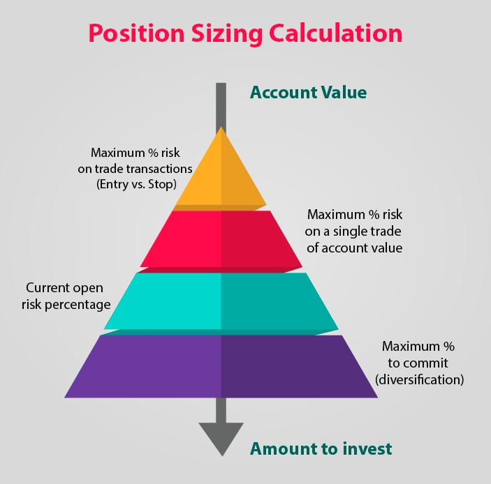

Risk Management
Effective risk management is a critical aspect of successful trading. This page explores various strategies and principles to help you navigate the challenges associated with trading risks and protect your capital.
Key Risk Management Strategies
Implement these strategies to manage and minimize risks in your trading activities:
- Position Sizing: Determine the appropriate size of each trade relative to your overall portfolio to limit potential losses.
- Stop-Loss Orders: Set predefined stop-loss levels to automatically exit trades if they reach a certain loss threshold.
- Diversification: Spread your investments across different assets or asset classes to reduce the impact of a poor-performing investment.
- Risk-Reward Ratio: Evaluate potential returns against potential losses before entering a trade to ensure a favorable risk-reward balance.
- Continuous Monitoring: Stay informed about market conditions and news that may impact your investments, allowing for timely adjustments to your strategy.
- Use of Leverage: Exercise caution when using leverage, as it can amplify both gains and losses. Only use leverage if you fully understand its implications.
Additional Risk Considerations
Successful risk management involves understanding and addressing various aspects of trading risk:
- Market Risk: The risk of financial loss due to adverse market movements.
- Credit Risk: The risk of loss arising from the default of a counterparty or borrower.
- Liquidity Risk: The risk associated with the inability to buy or sell an asset quickly at a stable price.
- Event Risk: The risk of unexpected events, such as economic releases or geopolitical developments, impacting the market.
- Psychological Considerations: Emotional factors can influence decision-making. Develop discipline and stick to your risk management plan.
Articles and Charts
Explore more about risk management with these articles and visual aids:
- Investopedia - Risk Management Strategies for Traders
- DailyFX - Risk Management Tips for Forex Traders

Example Risk Management Chart